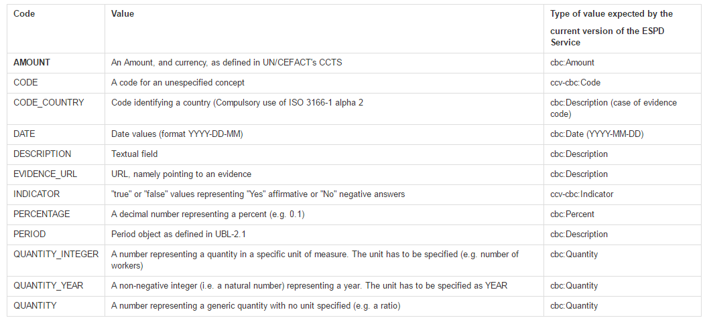

Response
The ccv:Response class is used by the economic operator to answer a specific Requirement issued by
the contracting body.
|
Providing the expected data type
The XSD Schema defines multiple types of data for the response (Indicator, Amount, Date, etc.), only one response data MUST be provided. And the data provided in the response MUST match the one specified in the attribute of the class ccv:Requirement. The economic operator MUST use the code list ResponseDataType and make sure that the data provided is of the same type that the one expected by the contracting authority (See the column ''Type of value expected by the current version of the ESPD Service''). |
"A class to associate the answer provided by the Economic Operator (EO) to a specific Requirement" |
||||
Attributes |
||||
pi |
Processing Instruction. Reserved for non-standard processing of the class; |
OPTIONAL (0..1) |
|
|
Properties |
||||
cbc:ID |
A language-independent token, e.g., a number, that allows to identify a Response |
OPTIONAL (0..1) |
|
|
ccv-cbc:Indicator |
Indicates a positive or a negative answer provided by the economic operator as an answer to a question in the Requirement |
|
OPTIONAL (0..1) |
`Comment: The only possible values are False and True |
cbc:Description |
A textual description of a criterion response that describes how an economic operators fulfills an specific criterion |
OPTIONAL (0..1) |
||
cbc:Amount |
Declared amount that fulfills this criterion |
|
OPTIONAL (0..1) |
|
ccv-cbc:Code |
A code pointing at a definition of a concept as the answer to the Requirement |
OPTIONAL (0..1) |
`Comment: The current ESPD Service does not use this property, but consider for example a Requirement asking for a country code: in that case this would be the right placeholder for the expected data |
|
cbc:Date |
Declared date that fulfills this criterion |
|
OPTIONAL (0..1) |
`Rule: The date format MUST be 'YYYY-MM-DD', where 'Y' stands for 'Year', 'M' for 'Month', and 'D' for 'Day' |
cbc:Percent |
Declared percentage that fulfills this criterion |
|
OPTIONAL (0..1) |
|
cbc:Quantity |
Declared quantity that fullfills the criterion |
|
OPTIONAL (0..1) |
|
Associated classes |
||||
cac:Period |
Declared period that fulfills the Criterion |
|
OPTIONAL (0..1) |
|
cev-cac:Evidence |
One or more references to a source where a documentary proof can be obtained to demonstrate that one stated response does actually fulfill the Requirement from a Criterion |
OPTIONAL (0..n) |
|
|
RelatedParty |
A party that may be affected by the response provided by the economic operator |
OPTIONAL (0..1) |
|
|
| 1 | "…" indicates that some mandatory elements (ID and Description) have been removed from the example to shorten it |
| 2 | Notice the use of the attribute unitCode |
| 3 | Notice the absence of the attribute unitCode |
|
About the different types of Quantities
Up to three different types of Quantities can be specified: (1) QUANTITY_INTEGER, a number representing a quantity in a specific unit of measure. The unit has to be specified (e.g. number of workers); (2) QUANTITY_YEAR, a non-negative integer (i.e. a natural number) representing a year. The unit has to be specified as YEAR, and (3) QUANTITY, a number representing a generic quantity with no unit specified (e.g. a ratio). Beware that in the case of QUANTITY_INTEGER and QUANTITY_YEAR the attribute unitCode MUST be always specified (See code list ResponseDataType).

Figure XXX: The ResponseDataType code list
|